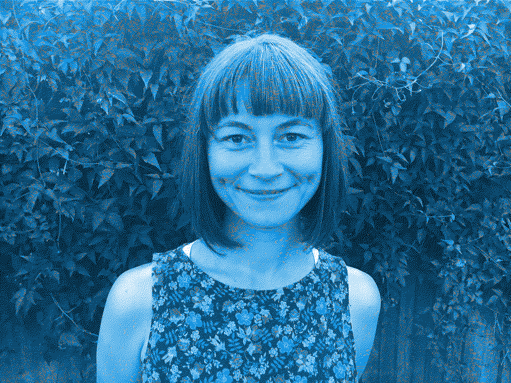
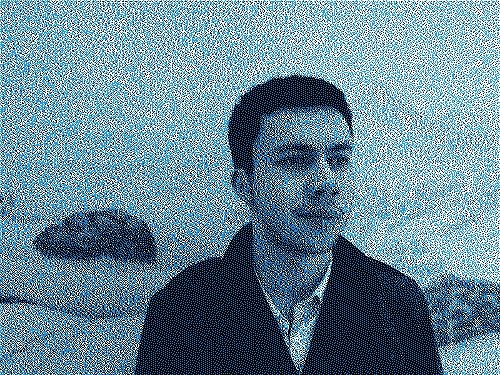

Fellows

Liliana Bounegru is Lecturer in Digital Methods at the Department of Digital Humanities, King's College London. She is also co-founder of the Public Data Lab and affiliated with the Digital Methods Initiative in Amsterdam and the médialab, Sciences Po in Paris. More about her work can be found here. You can follow her on Twitter at @bb_liliana.
Simone Fehlinger is a graphic designer, researcher, and lecturer at the Cité du design-École supérieure d'art et design Saint-Étienne, where she co-founded the Deep Design Lab―The Material and the Visual of the Anthropocene in 2019. Exploring the science and the fiction(s) of the mainstream weather report performing everyday anthropocene realities, she is currently PhD candidate at the University of Strasbourg. More about her work can be found here.

Jonathan W. Y. Gray is Senior Lecturer (Associate Professor) in Critical Infrastructure Studies at the Department of Digital Humanities, King’s College London, where he is currently writing a book on data worlds. He is also Cofounder of the Public Data Lab and Research Associate at the Digital Methods Initiative (University of Amsterdam) & the médialab (Sciences Po, Paris). More about his work can be found at jonathangray.org & at @jwyg.
Timeline
In preparation for the hackathon, we welcomed both expressions of general interest and submissions, e.g. research questions, tools, methods, data sets or complete challenges. Registration is now closed.
In preparation for the hackathon, we are reviewing submissions and preparing some of the challenges.
Numerous teams are working no various challenges relating to environmental data and the humanities. The results will be published here soon !
Location
Haus der Brandenburgisch-Preußischen Geschichte (HBPG)
Am Neuen Markt 9, 14467 Potsdam
Germany
Organisers
Potsdam Network for Digital Humanities
Anna Busch, Birgit Schneider, Daniil Skorinkin, Peer Trilcke
Weather Reports research project
Birgit Schneider, Maximilian Gregor Hepach
Mail: digital-humanities@uni-potsdam.de
Twitter: @DH_Potsdam #EnvironmentalData2023
Funded by the Henriette Herz Prize and the Alexander von Humboldt Foundation.
In cooperation with the Haus der Brandenburgisch-Preußischen Geschichte (HBPG) and the Brandenburgisches Zentrum
für Medienwissenschaften (ZeM).
Schedule
| Day 1 May 31st |
Day 2 June 1st |
Day 3 June 2nd |
|
|---|---|---|---|
| 09:00 | |||
| 09:30 | Plenary | Plenary | |
| 10:00 | Team work! | Team work! | |
| 10:30 | |||
| 11:00 | |||
| 11:30 | |||
| 12:00 | |||
| 12:30 | |||
| 13:00 | |||
| 13:30 | |||
| 14:00 | Arrival | ||
| 14:30 | |||
| 15:00 | Opening & Pitches | ||
| 15:30 | - | ||
| 16:00 | - | ||
| 16:30 | Coffee break | Final presentations | |
| 17:00 | Find a team! | ||
| 17:30 | - | ||
| 18:00 | - | ||
| 18:30 | - | ||
| 19:00 | Dinner | Dinner | |
| 19:30 | |||
| 20:00 | |||
| 20:30 | |||
| 21:00 | |||
| 21:30 | |||
| 22:00 |
CHALLENGES
Challenges pitched
| Challange | Presenters |
|---|---|
| Counter-visualisations of ensemble forecasts (for mainstream use) using footage from local-global (extreme) weather archives | Simone Fehlinger, Damien Baïs |
| Repurposing forest media | Jonathan Gray, Liliana Bounegru et al. |
| Weather Horoscope | Birgit Schneider, Maximilian Hepach |
| Combining Ships Logs with corpus from cultural texts | J.R. Carpenter |
| EcoCor (a programmable corpus for research in ecocriticism) | Daniil Skorinkin, Peer Trilcke et al. |
| Scoping Multi-vectoral Landscape Data Methods | May Ee Wong, Paolo Patelli, Jussi Parikka |
| Shift in the phenomenological cycle of the year | Jonas Parnow |
| Finding cause-effect relationships in texts about climate-related events | Manfred Stede et al. |
| Interactive climate pathway simulator | Tim Repke |
| climasynth: Developing audible drought manifestations | Eleni-Ira Panourgia, Bela Usabaev |